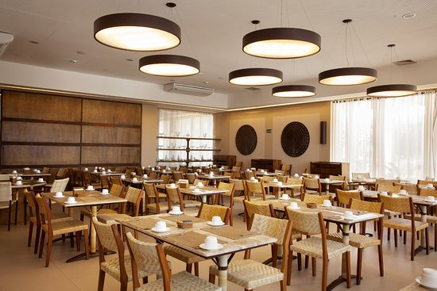
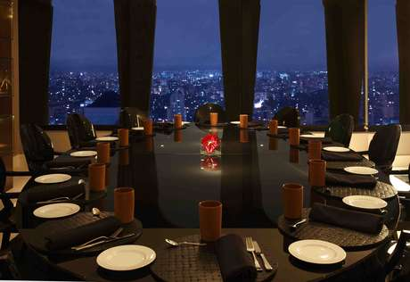

Pólo gastronômico exclusivo do Chalé Hotel
Nossos restaurantes e Pool Bar são os ambientes perfeitos para celebrar a vida, desde coquetel com vista para a piscina até a mesa do chef no Cipriani. Comece seu roteiro com refrescantes drinks à beira da piscina, em nosso Pool Bar. Deguste a autêntica culinária internacional com influência de produtos brasileiros no Pérgula. Delicie-se com a riqueza da gastronomia pan-asiática no Mee, com Estrela Michelin. Ou saboreie a sofisticada e autêntica cozinha italiana no Ristorante Hotel Cipriani, também com estrela Michelin.

Aberto em 1994, o Ristorante Hotel Cipriani foi batizado em homenagem ao hotel mais sofisticado de Veneza e no intuito de viajar pela culinária típica da Itália, o chef Aniello Cassese apresenta cardápio focado nos produtos italianos de verdade, produtos autênticos, servindo em suas criações autorais cheias de técnicas modernas e inovadoras. O Cipriani foi premiado com uma Estrela Michelin em 2019 e manteve a Estrela em 2020.
RESTAURANTE HOTEL CIPRIANI
Aberto em 1994, o Ristorante Hotel Cipriani foi batizado em homenagem ao hotel mais sofisticado de Veneza e no intuito de viajar pela culinária típica da Itália, o chef Aniello Cassese apresenta cardápio focado nos produtos italianos de verdade, produtos autênticos, servindo em suas criações autorais cheias de técnicas modernas e inovadoras. O Cipriani foi premiado com uma Estrela Michelin em 2019 e manteve a Estrela em 2020.

De todos os melhores restaurantes do Rio, o MEE é sempre elogiado pelas críticas e é fácil entender o porquê. Ambiente exótico bem no coração do Belmond Copacabana Palace, o espaço acolhe todos os amantes da culinária pan-asiática. Renda-se ao que esta cozinha tem de melhor para oferecer e aprecie a nossa vasta carta de saquês importados. O chef Itamar Araújo comanda o restaurante e trás novos sabores ao menu MEEchelin. O MEE foi premiado com uma estrela Michelin e é o único pan-asiático a receber este prestigiado prêmio.
RESTAURANTE MEE
De todos os melhores restaurantes do Rio, o MEE é sempre elogiado pelas críticas e é fácil entender o porquê. Ambiente exótico bem no coração do Belmond Copacabana Palace, o espaço acolhe todos os amantes da culinária pan-asiática. Renda-se ao que esta cozinha tem de melhor para oferecer e aprecie a nossa vasta carta de saquês importados. O chef Itamar Araújo comanda o restaurante e trás novos sabores ao menu MEEchelin. O MEE foi premiado com uma estrela Michelin e é o único pan-asiático a receber este prestigiado prêmio.
Chalé Hotel ©